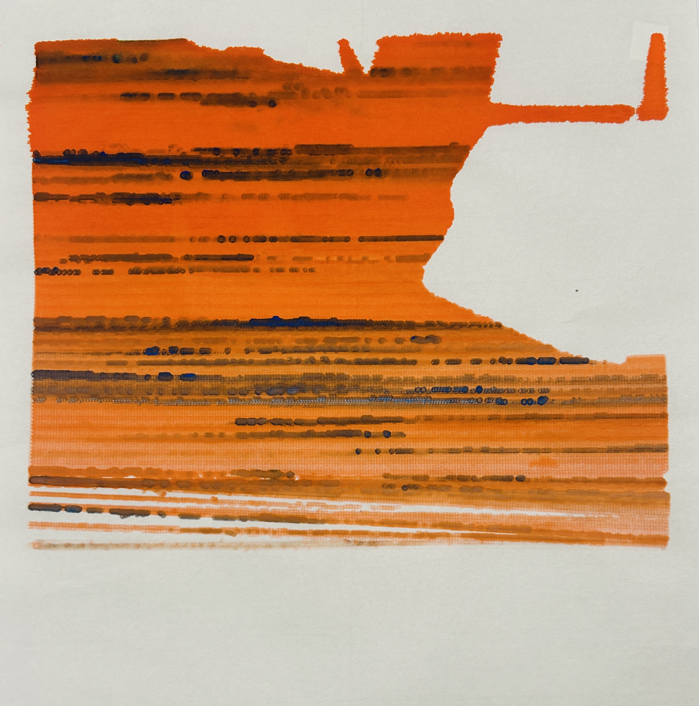

Week 2 Homework Documentation
Procedural Design Development

Pen Plotter, Brush Pen

Pen Plotter, Brush Pen

Pen Plotter, Brush Pen

Pen Plotter, Brush Pen
Description
This week's project continued and expanded my experimentation with materials from last week. I found that brush pens create interesting bleeding and blurring effects on rice paper, so I did the whole project based on this. For the vectors, they come from images that are over-rendered and actracted so that the vectors did not have recognizable forms anymore. I also did some tryouts on the bigger paper and was changing the brush pen and dipping the pen into water as the printing process went by -- I am interested in the results but it was really time-consuming.